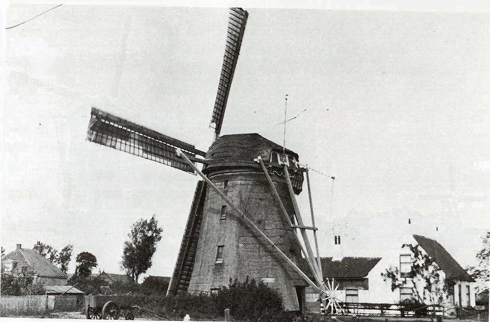

Schipluiden verdwenen molens

|
Foto's van de funderingsresten Schouw of Slinkslootmolen. van de"Holierhoekse-en Zouteveense Polder". Zie ook: http://www.molendatabase.org/molendb.php?step=details&formpw=&session=&nummer=4628
|
|
De Kerkpoldermolen is een van de oudste molens windwatermolens. De molen werd reeds in 1413 genoemd en was zeer lange tijd HOOFDSEINMOLEN van het Hoogheemraadschap van Delfland. In 1880 werd de molen tot stoomgemaal omgebouwd. In 1938 werd de molenromp |
 Woudsche droogmakerij 1 |
 Woudsche droogmakerij 2 |
.jpg) Woudsche droogmakerij brand 1957 |
.jpg) Woudsche droogmakerij brand 1957 |
 Voor: de molen van de Woudsche droogmakerij links daarachter de molen van de Woudsche polder: Links daarvan de deels gesloopte Haraschmolen van de Harnaschpolder |
 Restant van de afgebrande molen van de Droogmakerij van de Woudsche polder |
 Molen van de Woudsche droogmakerij-bouwjaar 1846: vlucht 28.60 m.: in 1934 systeem Dekker aangebracht:- op 11 december 1957 ten gevolge van kortsluiting |
 De molen van de Woudsche droogmakerij 1935 |
|
|
De verbrande Korpershoek anno 1865:- de vorige verbrande op 21-07-1865 deze molen verbrande op 2 februari 1945:-Thans staat er een andere uit Leimuiden op de baard staat anno1751 |
De verbrande Korpershoek 2 |
|
De verbrande Korpershoek 3 |
 De verbrande Korpershoek 4 |
|
|
De Korpershoek 1905 |
|
De verbrande Korpershoek 5 |
 De verbrande Korpershoek 6. |
 |
.jpg) De verbrande Korpershoek 7. |
 De Korpershoek |
 |
|
De Korpershoek |
 De Korpershoek in 1928. |
 De Korpershoek. De foto dateert van 1927 en komt uit een particulier fotoboek, Het fotoboek is van een Zwitsers persoon, die in 1927 met die mooie auto door Nederland reisde. |
|
 De Nieuwe Woudschemolen. Foto met dank aan www.Harnaschwetering.nl |
 Oude Woudsche of Hoge Heulmolen. Tekening van J Jansen. Met dank aan Hans Roest. |
|
De Hoge Heulmolen van de Woudsche polder of de oude Woudsche molen:- vlucht 24.80 m. :-gesloopt 1924: |
|
 Deze pagina is gemaakt op 25-12-2006: Tijd: 21:22 uur.
Deze pagina is gemaakt op 25-12-2006: Tijd: 21:22 uur.

Laatste wijziging:8-5-2007: Tijd 18:53 uur.
Met dank aan: de
Hollandsche molen/Rob Pols/Hans Klok/Gerard Barendse/
Erwin Esselink/Teun van der Sloot/Hans Roest/Peter
Varekamp voor het gebruik van de foto's